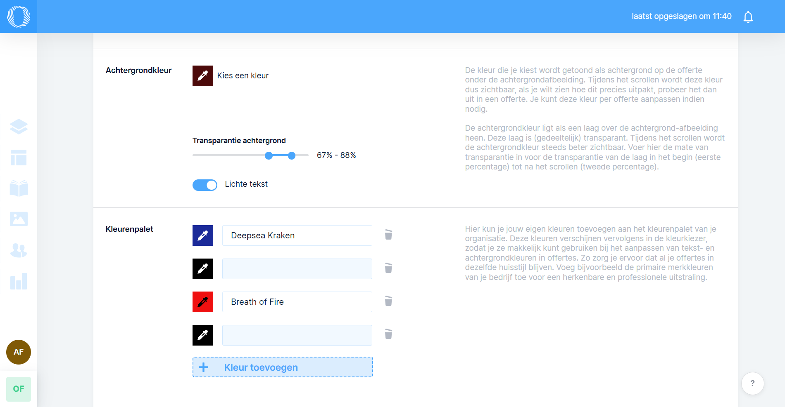
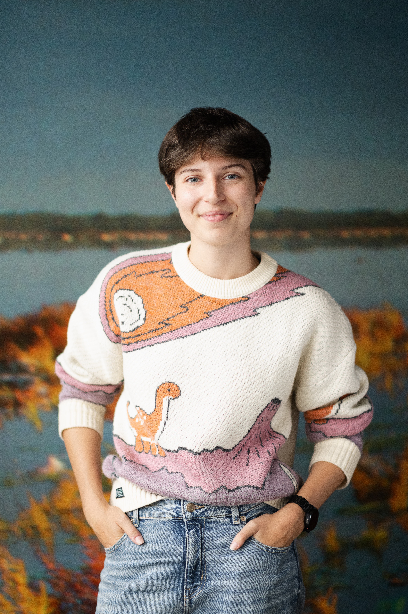

View full size ↗INTERNSHIP · YEAR 3
Offri at Slik
Making a proposal editor more flexible, consistent and intuitive. From text colours to reusable workspace palettes.
Explore projectI’m a CMGT student who likes the part where programming meets design. I build websites and apps, sew things I probably could have bought, and get very enthusiastic about books and space.

hello from my little corner of the internet!ALANA LE FEBER
View full size ↗Making a proposal editor more flexible, consistent and intuitive. From text colours to reusable workspace palettes.
Explore projectAn ADHD-focused clothing app that helps people see what they wear and decide what to keep, one item at a time.
Explore projectAway from my laptop, you’ll find me reading, making costumes or falling down a space research rabbit hole. My writing minor is bringing two of those together: I’m working on a logbook-style story about the things we leave in space, and the very human wish to be remembered.
Meet the person behind the projects ↗